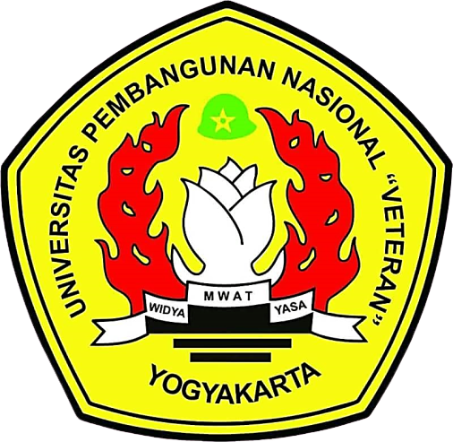

Jadwal Perkuliahan S1 Teknik Geofisika
UPN Veteran Yogyakarta 2020/2021
Nama : Fawwaz Byru Fitrianto
NIM : 115.170.045
Jurusan : S1 Teknik Geofisika
No
Hari
Kelas
Jam
Mata Kuliah
1
Senin
A
07.30 - 09.15
Eksplorasi Batubara
2
D
18.30 - 20.15
Teori Medan Potensial
3
Selasa
C
10.15 - 12.00
Fisika Matematika 1
4
A
15.45 - 17.30
Pengantar Teknik Geofisika
5
Rabu
A
13.00 - 14.45
Kapita Selekta Geofisika
6
Kamis
B
07.30 - 09.15
Manajemen Eksplorasi Geofisika
7
A
09.20 - 11.05
Geoenterpreneurship
8
-
A
-
Proposal Skripsi
9
-
C
-
KKN
Jadwal Harian
Hari
Jam
Kegiatan
Setiap hari (no excuses)
07.00 - 09.00
Beres-beres rumah